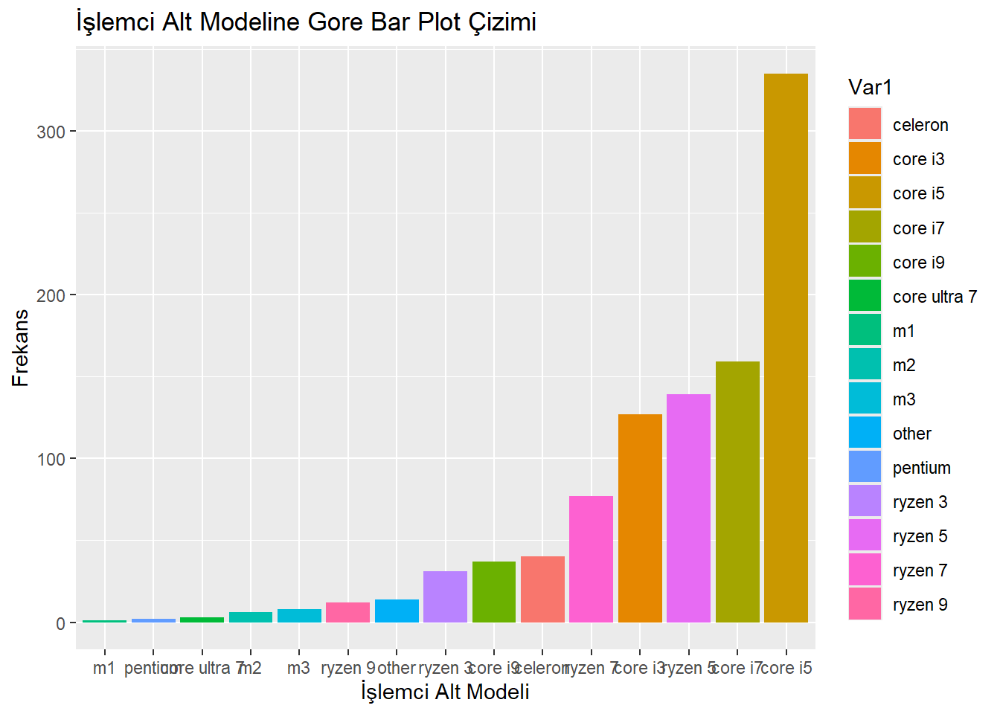
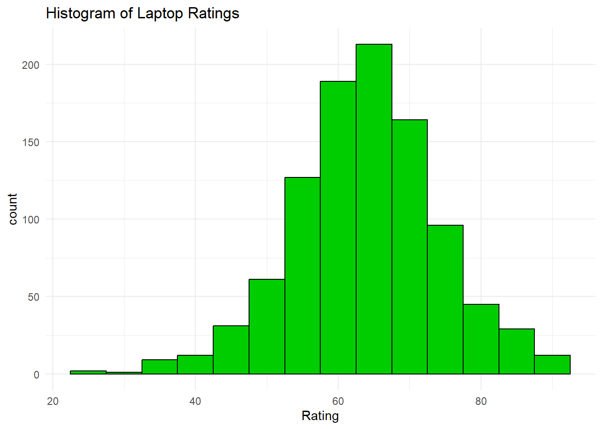
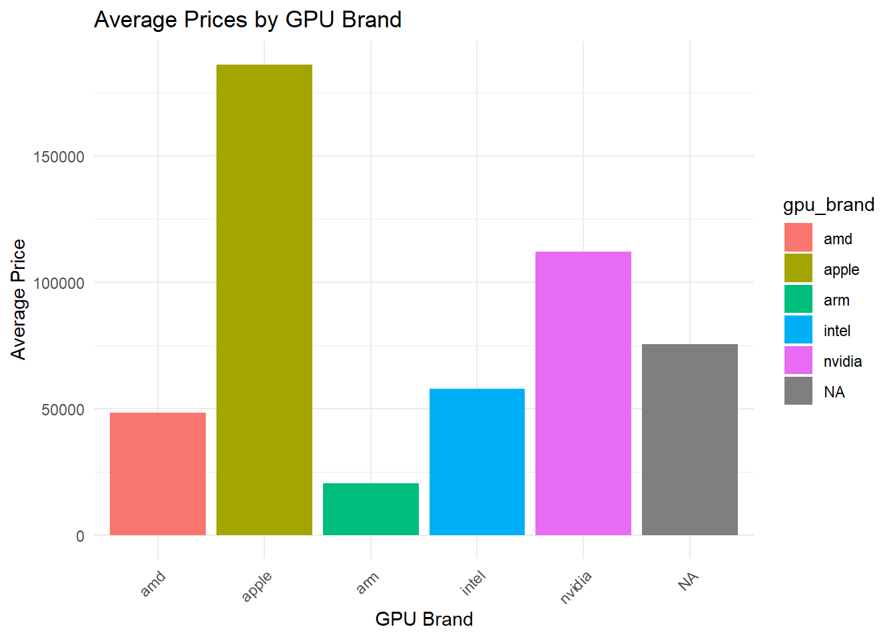
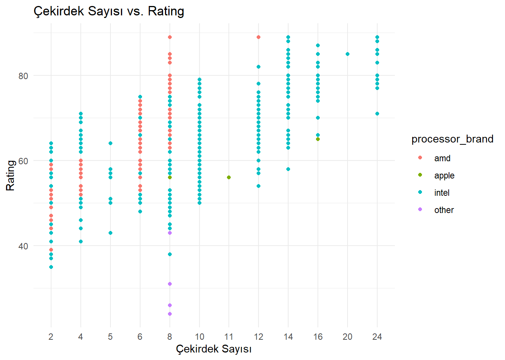

Bu projede, farklı markalara ve teknik donanım özelliklerine sahip 991 adet dizüstü bilgisayara ilişkin fiyat, donanım ve bilgisayar puanı (Rating) verileri incelenmiştir. Çalışmanın temel amacı, bilgisayar puanını etkileyen en önemli teknik özellikleri belirlemek ve fiyat–performans dengesi üzerine çıkarımlar yapmaktır.
Bu kapsamda aşağıdaki analiz adımları gerçekleştirilmiştir:
Veri İncelemesi ve Temizliği:
Veri setindeki eksik değerler, kategorik ve sayısal veri dönüşümleri yapılmış, fiyatlar INR’den USD’ye çevrilmiştir.
Betimleyici İstatistikler ve Görselleştirme:
Sayısal değişkenlerin ortalama ve standart sapmaları hesaplanmış; kategorik değişkenlerin dağılımları grafiklerle analiz edilmiştir.
İlişki Analizleri:
Rating değişkeni ile donanım özellikleri arasındaki ilişkiler grafiksel olarak ve korelasyonla incelenmiştir.
Modelleme Aşaması:
Lineer regresyon modeli kurulmuş ve hata metrikleri (RMSE, MAE) ile model başarımı değerlendirilmiştir.
Bu analizler sonucunda bilgisayar performansını etkileyen başlıca faktörler belirlenmiş ve kullanıcılar için daha verimli laptop seçim kriterleri ortaya koyulmuştur.
2 Veri Hakkında Genel Bilgiler
Analiz için kullanılan laptops.csv veri seti, Hindistan pazarında satılan farklı laptop modellerine ait hem teknik donanım bilgilerini hem de bilgisayar puanlarını içermektedir.
Gözlem Sayısı: Toplamda 991 satır bulunmaktadır. Her satır bir dizüstü bilgisayar konfigürasyonuna (örneğin, “HP Pavilion 15”, 8GB RAM, Core i5, 512GB SSD) karşılık gelir.
Sütun Sayısı: Veri setinde 22 değişken bulunmaktadır.
2.1 Kaynak ve Dönüştürmeler
Fiyatlar Hindistan Rupisi (INR) cinsindendir, analizde kullanılmak üzere 1 USD ≈ 83 INR kuru ile USD’ye çevrilmiştir.
İşlemci seviyeleri arasında dikkat çekici sıklık farkları var mı?
f =table(data_new$processor_tier)f_data =data.frame(f)ggplot(f_data, aes(x =reorder(Var1, Freq), y = Freq, fill = Var1)) +geom_bar(stat ="identity") +labs(title ="İşlemci Alt Modeline Gore Bar Plot Çizimi", y ="Frekans", x ="İşlemci Alt Modeli") +theme(axis.text.x =element_text(angle =45, hjust =1, vjust =1)) # X ekseni etiketlerini döndür

Çubuk grafik incelendiğinde, işlemci seviyeleri arasında en yaygın olanın Core i5 olduğu görülmektedir. Teorik olarak, çoğu müşterinin Core i5 performansından memnun olduğu söylenebilir.
Laptop fiyatları, işlemci markası ve GPU türüne göre nasıl değişmektedir?
ggplot(data_new, aes(x = processor_brand, y = Price, color = gpu_type)) +geom_point(alpha =0.6) +labs(title =' GPU Tipine Gore Fiyat ve İşlemci Markası İlişkisi', x ='İşlemci Markası', y ='Fiyat') +theme_minimal() +scale_y_continuous(labels = scales::dollar_format(prefix ='$ '))

İşlemci markası ile fiyat arasındaki ilişkiyi GPU türüne göre renklendirilmiş olarak gösteren grafik
Laptop puanları, işlemci markası ve GPU türüne göre nasıl değişmektedir?
ggplot(data_new, aes(x = processor_brand, y = Rating, color = gpu_type)) +geom_point(alpha =0.6) +labs(title =' GPU Tipine Gore Rating ve İşlemci Markası İlişkisi', x ='İşlemci Markası', y ='Rating') +theme_minimal() +scale_y_continuous(labels = scales::dollar_format(prefix =''))

Çekirdek sayısı ile laptop puanları arasında, işlemci markasına göre bir ilişki var mı?
ggplot(data_new, aes(x = num_cores, y = Rating, color = processor_brand)) +geom_point() +labs(title ="Çekirdek Sayısı vs. Rating",x ="Çekirdek Sayısı",y ="Rating") +theme_minimal()

Çekirdek sayısı ile puanlar arasında doğrusal bir ilişki olduğu söylenebilir.
Fiyat ile puanlama arasında bir korelasyon var mı?
Kutu grafiği, özellikle daha yüksek kapasiteli SSD’lerin, HDD’lere kıyasla daha yüksek ve tutarlı puanlarla kullanıcılar tarafından açıkça tercih edildiğini göstermektedir.
Puanlar, işlemci markası, GPU markası ve RAM bellek kombinasyonlarına göre nasıl değişiyor?
Daha yüksek RAM kapasitelerine ve AMD ya da Intel işlemcilerle NVIDIA GPU kombinasyonlarına sahip laptoplar, genellikle daha yüksek puanlar almaktadır.
Farklı laptop markaları (örneğin Dell, HP, Lenovo) ortalama puanı nasıl etkiliyor? Hipotez: Apple gibi bazı markalar, diğerlerine kıyasla daha yüksek ortalama puanlara sahiptir.
Bu proje kapsamında yapılan analizler doğrultusunda aşağıdaki önemli çıkarımlar elde edilmiştir:
Fiyat–Performans Dengesinde orta seviye işlemciler (özellikle Core i5) yüksek bilgisayar puanı sağlarken, aşırı yüksek donanım özellikleri her zaman daha yüksek Rating ile sonuçlanmamaktadır.
SSD tipi birincil depolama birimleri ve daha yüksek RAM kapasiteleri, bilgisayar puanları anlamlı şekilde artırmaktadır.
GPU markaları arasında NVIDIA ekran kartına sahip modellerin ortalama puanları genellikle daha yüksektir. Entegre grafik birimlerine sahip modellerde puanlar görece düşüktür.
Laptop fiyatı ile bilgisayar puanı arasında pozitif ama zayıf bir ilişki gözlemlenmiştir. Bu durum, daha pahalı laptopların her zaman daha memnuniyet verici olmadığını göstermektedir.
Modelleme sonucunda Price, ram_memory, gpu_brand gibi değişkenlerin Rating üzerinde anlamlı etkileri olduğu görülmüştür. Ancak modelin açıklayıcılığı orta seviyede kalmıştır.
Genel Sonuç: Bilgisayar puanı sadece fiyata değil; SSD varlığı, RAM kapasitesi ve ekran kartı özellikleri gibi teknik faktörlere dayanmaktadır. Bu bağlamda üreticilerin fiyatı artırmak yerine doğru konfigürasyonlara odaklanmaları, müşteri memnuniyetini artırmada daha etkili olacaktır.
Rating açısından değerlendirildiğinde LG ve MSI en yüksek ortalama ratinge sahipken jio ve primebook markaları en düşük ortalama ratinge sahiptir. Apple marka laptoplar ise fiyat açısından pahalı olmasına rağmen rating olarak bu sıralamanın ortalarında kalmaktadır. Paramızı boşa harcamayıp daha fiyat performans laptoplar alalım. :)